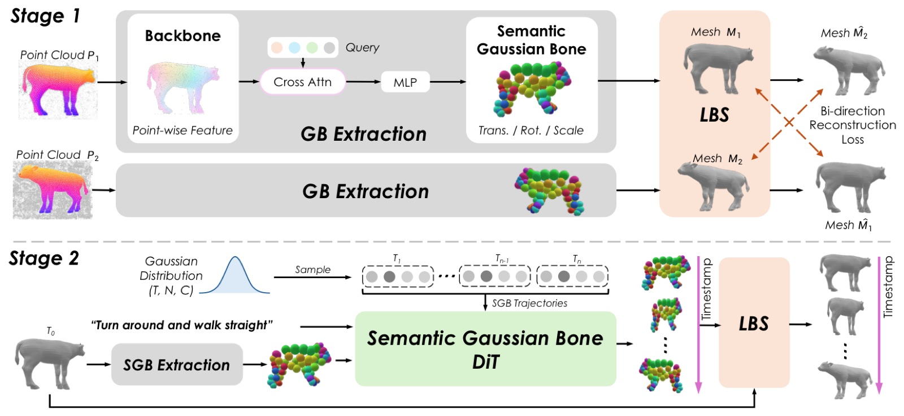

Animate any raw animal mesh from a text prompt — no skeleton, no joint names, no manual rigging.
1New York University 2Cornell University · author list tentative
Paper, code and data will be public.
We introduce AniMuse, a two-stage framework for text-driven animal mesh animation directly from raw meshes, without predefined skeletons, joint names, or manual rigging. At its core are Semantic Gaussian Bones (SGBs), a compact skeleton-free deformation representation decoded from a globally shared learnable query book and trained through explicit linear blend skinning with topology-aware mask-gated weights. The shared query book yields stable cross-instance bone slots, providing a mesh-native control space for text-conditioned generation and SGB-slot motion inpainting. A diffusion model generates per-bone trajectories from text and geometric bone latents, while allowing users to clamp selected SGB slots and inpaint the remaining full-body motion. On DeformingThings4D, our rig reduces bidirectional CD-L1 by 39% over the best neural skeleton baseline, and a forward-only variant achieves the lowest CD-L2 overall. On the out-of-domain AnimalML3D benchmark, AniMuse improves overall motion quality over skeleton-based and vertex-based baselines.
Every animal here started as a static mesh, and the motion you are watching was generated by AniMuse from a sentence. The left half of the frame shows the Semantic Gaussian Bones the model generated; the right half shows the surface those bones deform. Drag the divider to move the cut, and drag anywhere else to orbit — both halves share one camera. The buttons above change species.
A short film introducing AniMuse.

A Semantic Gaussian Bone is a soft, oriented ellipsoid inside the mesh, carrying a part of the surface with it as it moves. They are semantic because a given slot lands on the same body part in every animal — slot 37 is the same place on a fox as on an elephant. Training is self-supervised: the only signal is whether deforming one frame with the bones reproduces another. Abbreviated SGBs below.
All three columns are the same animal at the same instant, shown three different ways. On the left is the captured ground truth. In the middle are the SGBs AniMuse extracted from that animal's rest-pose mesh. On the right is that same rest-pose mesh, deformed by those SGBs onto the frame shown on the left — so the closer the right column is to the left one, the better the rig. The buttons above change clip; drag to orbit.
Every control feature further down this page rests on one property, and the model gets it for free: a given SGB slot is the same body part on every animal.
Hover any SGB — its counterpart lights up on every species.
An ellipsoid's colour is decided by its slot number, and all four animals use the same colour ramp. Two ellipsoids of the same colour are therefore the same body part on different species, and nothing is being matched while you watch — the correspondence is already in the model.
| Method | Per-Motion | Cross-Motion | ||
|---|---|---|---|---|
| CD-L1 ↓ | CD-L2 ↓ | CD-L1 ↓ | CD-L2 ↓ | |
| UniRig + Opt. | 0.0228 | 0.0076 | 0.0318 | 0.0108 |
| Puppeteer + Opt. | 0.0306 | 0.0065 | 0.0451 | 0.0122 |
| AniMuse + Opt. | 0.0138 | 0.0056 | 0.0198 | 0.0083 |
| AniMuse (network only) | 0.0283 | 0.0050 | 0.0372 | 0.0075 |
39% lower CD-L1 than the best skeleton rigger under matched optimisation. And the network-only row — a single forward pass, no test-time fitting at all — still takes the lowest CD-L2 in both settings: the rig is good before you optimise anything.
Stage 2 is trained on roughly 75,000 animal motion clips and evaluated on a benchmark it has never seen — different meshes, a different species distribution, a different capture pipeline.
Each of these eight animals was a static mesh, and each one's motion was generated by Stage 2 from a single sentence. All eight are driven by the same set of SGB slots, which is why one control can reach every species. Drag the divider to pull the whole wall from the bones to the surface they deform.
30 samples, two-alternative forced choice, following the protocol used in the text-to-motion literature. Against the strongest published skeleton-free baseline, participants preferred AniMuse's result 74.6% of the time overall and 84.0% on whether the motion matched the prompt. Against a skeleton-based baseline the margins are wider still. Against ground-truth capture we are, fairly, still behind — which is the honest state of the problem.
A generator you can only prompt is a slot machine. Because an SGB means the same body part on every animal, it doubles as a handle — and a control feature authored once works on all of them.
Pin some SGBs to a trajectory you want, and the model generates a coherent whole-body motion around them.
The only thing supplied here was the motion of the four pink slots; the model generated the whole rest of the body around them. The same four slots are pinned on every species, to one shared cadence, and each body answers it differently. The buttons switch between the constraint on its own, the SGBs the model wrote around it, and the surface those SGBs drive.
The same index space gives direct manual control: name a group of slots, and drag it.
One slider moves the same twelve SGB slots — the left front leg — on all three animals at once. Nothing here was set up per animal: those twelve slots mean the same leg on every species, so a single control reaches all of them. The top row is the surface, the bottom row the SGBs driving it, with the leg slots in pink. Drag the slider.
Another feature, motion transfer, falls out of the same mechanism: hand over a whole trajectory instead of a few slots, and a motion authored on one animal is, by construction, already addressed to the right body parts on any other.
AniMuse trains on raw mesh sequences — no template, no skeleton, no rigging annotation — so the training corpus can come from anywhere. We used that to build WebAnimal3D, an annotation-free animal motion corpus reconstructed from public web video, with an LLM-written caption per clip.
Release planned. We release the mesh-level motion data and captions, not the underlying videos.
AniMuse is under active development and a paper is in preparation. Happy to get in touch.